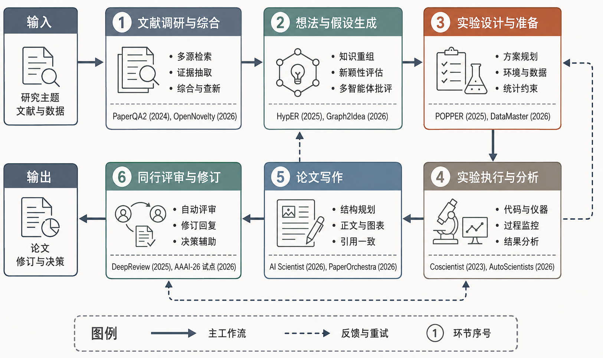

INSIDE AGENTIC SCIENCE
科研 Agent 怎样把工作做完
编码 Agent 停在能跑的改动。科研 Agent 还要把文献、假设、实验、图和审稿收成可检查的记录。一章只剖一个运行对象。

图 1：科研生命周期六环节。实线是主工作流，虚线是反馈与重试。后面各章切开的是循环里的对象，不是把这六个环节再摊成项目名册。
单个科学环节能不能自动化，早就不是悬念。质谱推断分子结构、从数据里重新发现物理定律、假设形成接到真实仪器——这些在大模型之前就已经发生过。2023 年前后真正变的是：规划、工具调用和长上下文，让「把整条科研链交给智能体」从口号变成可以工程化的目标。
六环节已经能串起来：检索与证据组织、想法与新颖性、方案与环境、代码与实验、图表与章节、组装与投稿。串得上不等于发现成立。当前系统在局部、封闭、可执行的任务上走得快；开放问题的新颖性、长程实验的稳定性、统计推断和物理安全，仍然要靠检查点、证据对象和停机条件，而不是靠一次更长的提示。
自动化也不等于无人化。人工介入点是设计参数：该挡的阶段就等人，该写盘的产物就写盘。本系列按运行对象切开——状态机、证据、内环、沙箱、技能、设备状态——每章末尾接到分析池里真正实现过该模块的仓库路径和冻结 commit。